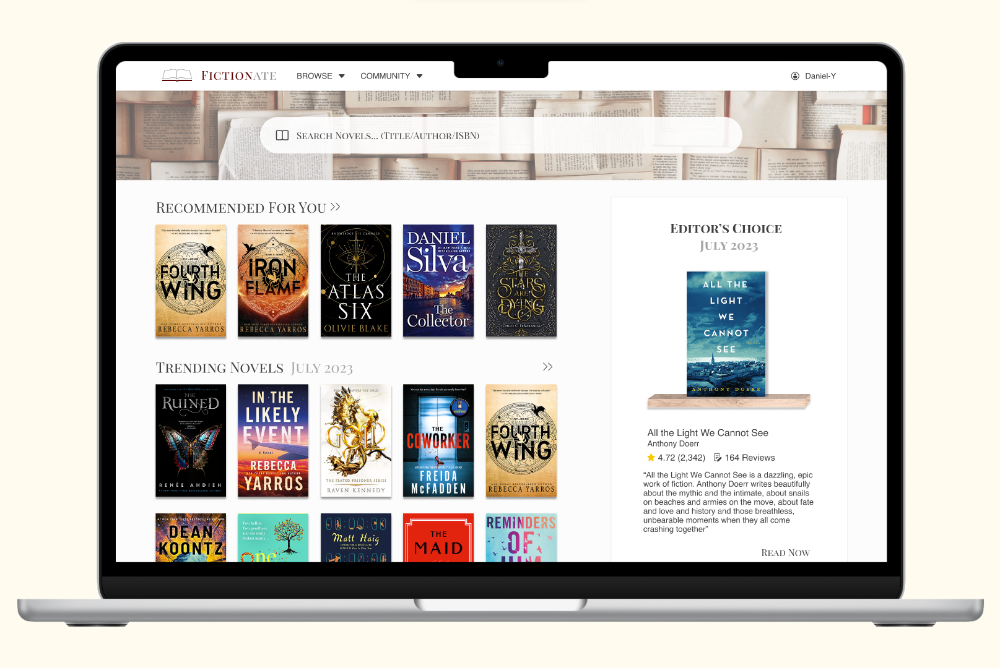

Fictionate
Designing a responsive book website across mobile and desktop.

Nurture
Utilising the design process to create a plant-care mobile app.

ABC Redesign
Redesigning the ABC website across mobile and desktop.